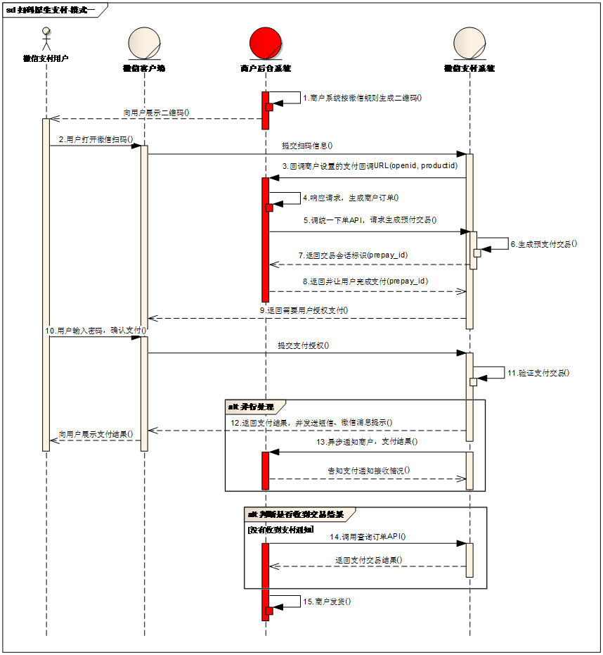

微信扫码支付业务流程时序图

业务流程说明
（1）商户后台系统根据用户选购的商品生成订单。
（2）用户确认支付后调用微信支付【统一下单API】生成预支付交易；
（3）微信支付系统收到请求后生成预支付交易单，并返回交易会话的二维码链接code_url。
（4）商户后台系统根据返回的code_url生成二维码。
（5）用户打开微信“扫一扫”扫描二维码，微信客户端将扫码内容发送到微信支付系统。
（6）微信支付系统收到客户端请求，验证链接有效性后发起用户支付，要求用户授权。
（7）用户在微信客户端输入密码，确认支付后，微信客户端提交授权。
（8）微信支付系统根据用户授权完成支付交易。
（9）微信支付系统完成支付交易后给微信客户端返回交易结果，并将交易结果通过短信、微信消息提示用户。微信客户端展示支付交易结果页面。
（10）微信支付系统通过发送异步消息通知商户后台系统支付结果。商户后台系统需回复接收情况，通知微信后台系统不再发送该单的支付通知。
（11）未收到支付通知的情况，商户后台系统调用【查询订单API】。
（12）商户确认订单已支付后给用户发货。
配置说明
打开 graceWechat.php，正确填写以下配置
//扫码支付配置
define('GWECHAT_WXPAY_SCAN_APPID', '******'); //公众号appId 与 微信支付对应
define('GWECHAT_WXPAY_SCAN_MCHID', '******'); //微信支付对应的商户ID
define('GWECHAT_WXPAY_SCAN_KEY', '******'); //微信支付对应的KEY
完整演示代码
<?php
class wxController extends grace{
public function index(){}
public function pay(){
/*
* 微信扫码支付
* 模拟一个1元的支付信息，真实环境可以利用订单数据来产生下面的order数据
*/
//模拟一个简单的订单信息
$order = array(
'id' => '100', //订单号码
'price' => 1 //订单价格
);
//使用统一下单接口返回微信支付前端必须的信息
$orderWxPay = array();
$orderWxPay['body'] = 'test...'; //支付描述
$orderWxPay['out_trade_no'] = time().$order['id']; //商户系统内部订单号，要求32个字符内
$orderWxPay['total_fee'] = $order['price']; //总价，需要 * 100
$orderWxPay['notify_url'] = 'http://www.phpgrace.com/wx/payback/'; //异步接收微信支付结果通知的回调地址
$orderWxPay['openid'] = 'ousKUxLX36V7c0yizEQnAWnQsRCk'; //客户的openid 公众号支付必须参数，通过登录即可获取
//实例化微信支付对象
$gracewechat = tool('graceWeChat');
//生成订单并返回支付必须的信息
$payOrder = $gracewechat->createOrder($orderWxPay, 'NATIVE');
//生成二维码 利用 qrcode 类
$imgUrl = $orderWxPay['out_trade_no'].'.png';
phpGrace\tools\qrcode::draw($payOrder['code_url'], $imgUrl);
//输出二维码
echo '<img src="/'.$imgUrl.'" />';
}
public function payback(){
$gracewechat = tool('graceWeChat');
//生成订单并返回支付必须的信息
$res = $gracewechat->payBack();
//将 res 数组与数据库内订单信息进行比对，比对后进行后续操作，如：更新订单状态、通知等
file_put_contents('payBack.txt', json_encode($res));
}
}